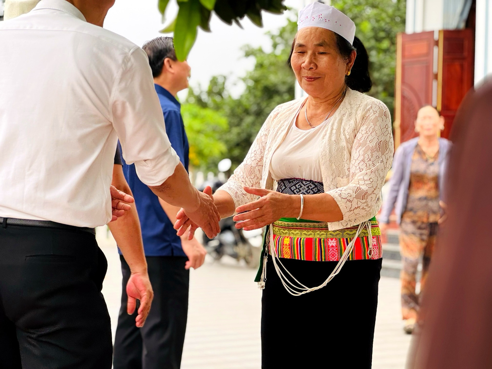
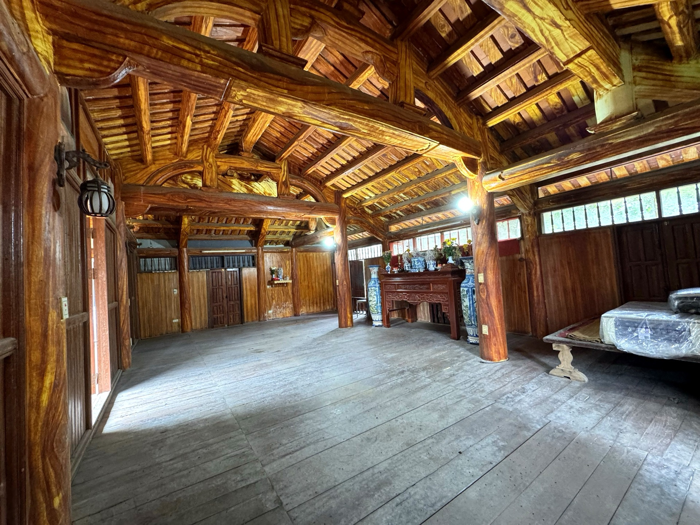
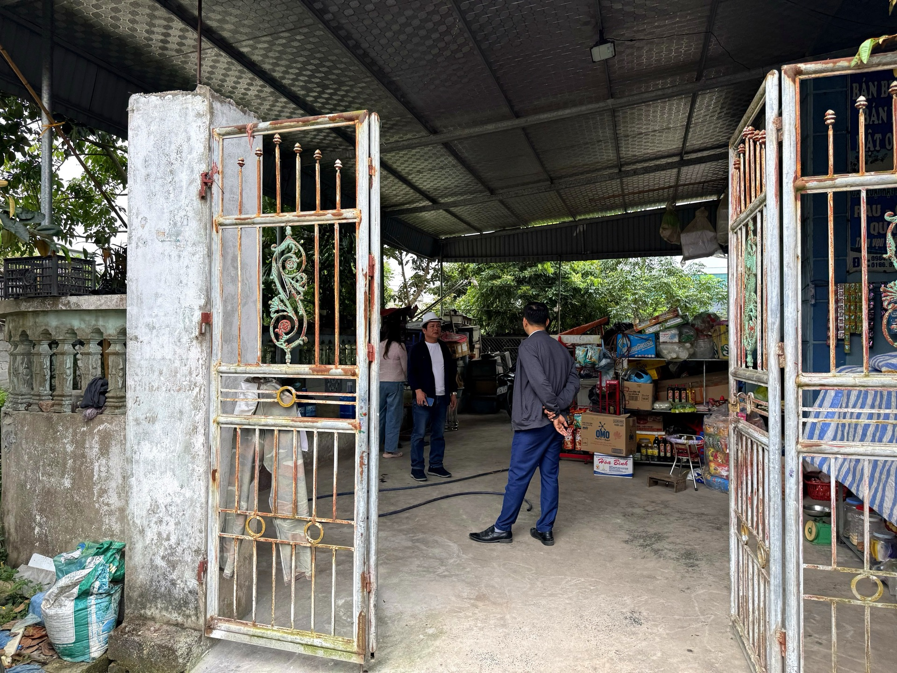
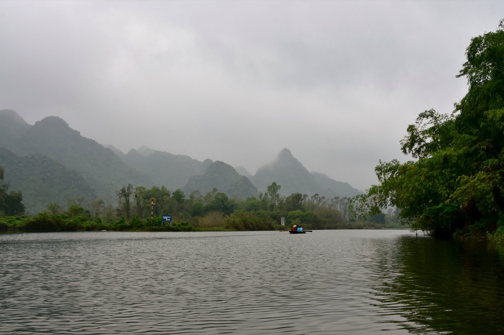
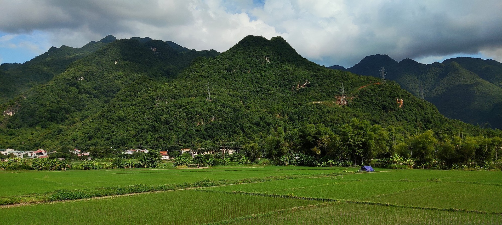
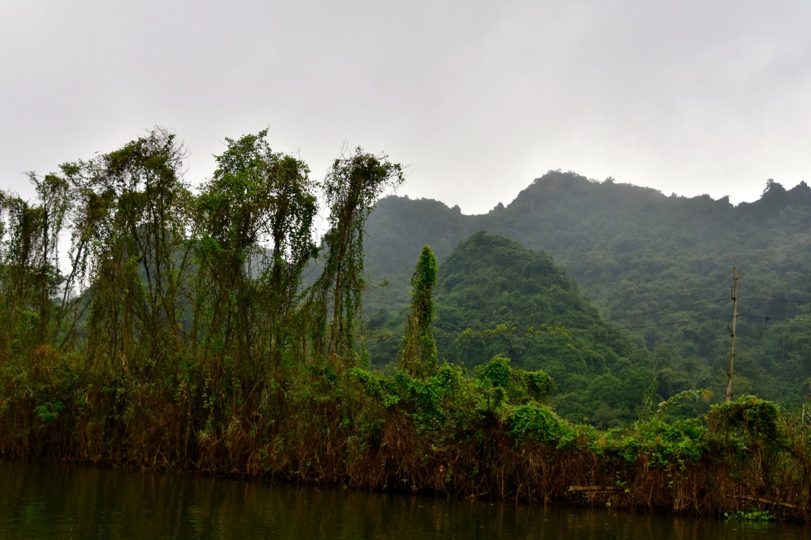
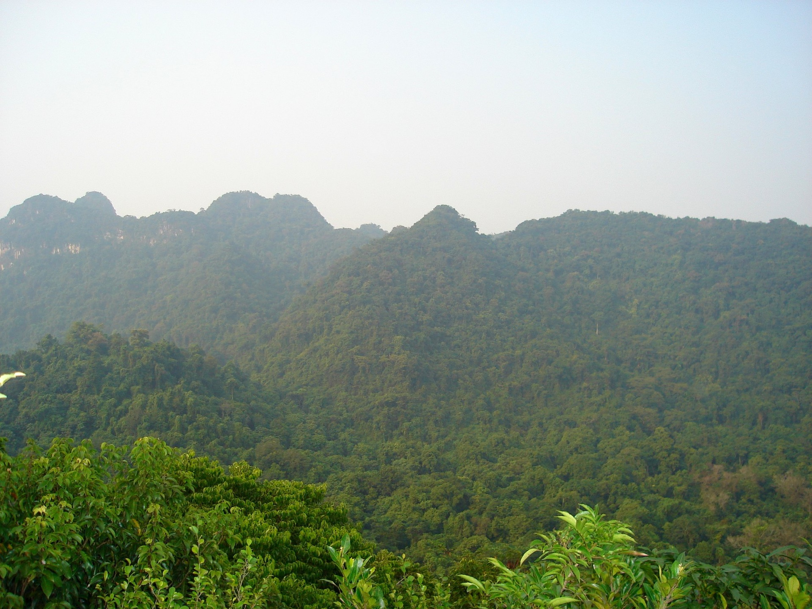

🪷 Khám phá sâu hơnDiscover MoreDécouvrez Davantage
Hồ sơ điểm đếnDestination ProfileProfil de la destination
Mỗi điểm một câu chuyện bản MườngEach spot tells a Muong village storyChaque lieu raconte une histoire du village Muong
🪷Di tích · Văn hoá · Tâm linhHeritage · Culture · SpiritualPatrimoine · Culture · Spiritualité14
 Chùa Phú CốcDi tích tâm linhSpiritual Heritage SitesSites de Patrimoine Spirituel→
Chùa Phú CốcDi tích tâm linhSpiritual Heritage SitesSites de Patrimoine Spirituel→ Chùa TiênDi tích tâm linhSpiritual Heritage SitesSites de Patrimoine Spirituel→
Chùa TiênDi tích tâm linhSpiritual Heritage SitesSites de Patrimoine Spirituel→ Chùa Đinh Long (Đinh Long Tự)Di tích tâm linhSpiritual Heritage SitesSites de Patrimoine Spirituel→
Chùa Đinh Long (Đinh Long Tự)Di tích tâm linhSpiritual Heritage SitesSites de Patrimoine Spirituel→ Chợ mới An PhúKhông gian văn hoáCultural SpaceEspace culturel→
Chợ mới An PhúKhông gian văn hoáCultural SpaceEspace culturel→ Nhà thờ Giáo xứ Bắc SơnDi tích tâm linhSpiritual Heritage SitesSites de Patrimoine Spirituel→
Nhà thờ Giáo xứ Bắc SơnDi tích tâm linhSpiritual Heritage SitesSites de Patrimoine Spirituel→ Nhà thờ họ ông Chế – Điểm tham quan nhà thờ họĐiểm trạm tâm linhSpiritual SanctuaryHalte spirituelle→Nhà văn hoá dân tộc (thôn Đình)Không gian văn hoáCultural SpaceEspace culturel→Tourism Hub – Nhà văn hoá thôn Đồi DùngKhông gian văn hoáCultural SpaceEspace culturel→Đình Phú CốcDi tích lịch sửHistorical siteSite historique→Đình Ái NàngDi tích lịch sửHistorical siteSite historique→Đền Chúa Mường (quán cửa rừng)Di tích tâm linhSpiritual Heritage SitesSites de Patrimoine Spirituel→
Nhà thờ họ ông Chế – Điểm tham quan nhà thờ họĐiểm trạm tâm linhSpiritual SanctuaryHalte spirituelle→Nhà văn hoá dân tộc (thôn Đình)Không gian văn hoáCultural SpaceEspace culturel→Tourism Hub – Nhà văn hoá thôn Đồi DùngKhông gian văn hoáCultural SpaceEspace culturel→Đình Phú CốcDi tích lịch sửHistorical siteSite historique→Đình Ái NàngDi tích lịch sửHistorical siteSite historique→Đền Chúa Mường (quán cửa rừng)Di tích tâm linhSpiritual Heritage SitesSites de Patrimoine Spirituel→ Đền Cây ThợiDi tích tâm linhSpiritual Heritage SitesSites de Patrimoine Spirituel→
Đền Cây ThợiDi tích tâm linhSpiritual Heritage SitesSites de Patrimoine Spirituel→ Đền Mẫu Thượng Thiên (Đền Ái Nàng)Di tích tâm linhSpiritual Heritage SitesSites de Patrimoine Spirituel→
Đền Mẫu Thượng Thiên (Đền Ái Nàng)Di tích tâm linhSpiritual Heritage SitesSites de Patrimoine Spirituel→ Đền Quán MaiDi tích tâm linhSpiritual Heritage SitesSites de Patrimoine Spirituel→
Đền Quán MaiDi tích tâm linhSpiritual Heritage SitesSites de Patrimoine Spirituel→🏔️Thiên nhiên · Cảnh quanNature · LandscapeNature · Paysages10
 Bè tre trên hồ BaibóoHồ nước · sôngLakes · RiversLacs · Rivières→
Bè tre trên hồ BaibóoHồ nước · sôngLakes · RiversLacs · Rivières→ Con đường TràmCảnh quan thiên nhiênNatural landscapesPaysages naturels→Hang HổCảnh quan thiên nhiênNatural landscapesPaysages naturels→Hồ BaibóoHồ nước · sôngLakes · RiversLacs · Rivières→
Con đường TràmCảnh quan thiên nhiênNatural landscapesPaysages naturels→Hang HổCảnh quan thiên nhiênNatural landscapesPaysages naturels→Hồ BaibóoHồ nước · sôngLakes · RiversLacs · Rivières→ Thung CánhCảnh quan thiên nhiênNatural landscapesPaysages naturels→Thung CấmCảnh quan thiên nhiênNatural landscapesPaysages naturels→
Thung CánhCảnh quan thiên nhiênNatural landscapesPaysages naturels→Thung CấmCảnh quan thiên nhiênNatural landscapesPaysages naturels→ Trekking Động Hương TíchCảnh quan thiên nhiênNatural landscapesPaysages naturels→
Trekking Động Hương TíchCảnh quan thiên nhiênNatural landscapesPaysages naturels→ Đồi hoa Mường thôn Bơ Môi & Đập đồng làngCảnh quan thiên nhiênNatural landscapesPaysages naturels→Đồi hoa kèn hồngCảnh quan thiên nhiênNatural landscapesPaysages naturels→Động Thuỷ TiênCảnh quan thiên nhiênNatural landscapesPaysages naturels→
Đồi hoa Mường thôn Bơ Môi & Đập đồng làngCảnh quan thiên nhiênNatural landscapesPaysages naturels→Đồi hoa kèn hồngCảnh quan thiên nhiênNatural landscapesPaysages naturels→Động Thuỷ TiênCảnh quan thiên nhiênNatural landscapesPaysages naturels→🏡Lưu trú · Farmstay · HomestayStays · Farmstay · HomestayHébergement · Farmstay · Homestay16
 Bà Là HomestayHomestay · lưu trúHomestay & AccommodationHomestay et hébergement→
Bà Là HomestayHomestay · lưu trúHomestay & AccommodationHomestay et hébergement→ Farmstay Mật Ong (Nhà ông Toản)FarmstayFarmstayFarmstay→Gió Núi FarmstayFarmstayFarmstayFarmstay→Homestay (dự kiến) Nhà bà MịchHomestay · lưu trúHomestay & AccommodationHomestay et hébergement→Homestay Baiboo Ông DoanhHomestay · lưu trúHomestay & AccommodationHomestay et hébergement→Homestay Bếp Mường Thành TrungHomestay · lưu trúHomestay & AccommodationHomestay et hébergement→Homestay Cao Minh KếHomestay · lưu trúHomestay & AccommodationHomestay et hébergement→Homestay Cao Văn ỨngHomestay · lưu trúHomestay & AccommodationHomestay et hébergement→Homestay Mường DuyHomestay · lưu trúHomestay & AccommodationHomestay et hébergement→Homestay Viên NhungHomestay · lưu trúHomestay & AccommodationHomestay et hébergement→
Farmstay Mật Ong (Nhà ông Toản)FarmstayFarmstayFarmstay→Gió Núi FarmstayFarmstayFarmstayFarmstay→Homestay (dự kiến) Nhà bà MịchHomestay · lưu trúHomestay & AccommodationHomestay et hébergement→Homestay Baiboo Ông DoanhHomestay · lưu trúHomestay & AccommodationHomestay et hébergement→Homestay Bếp Mường Thành TrungHomestay · lưu trúHomestay & AccommodationHomestay et hébergement→Homestay Cao Minh KếHomestay · lưu trúHomestay & AccommodationHomestay et hébergement→Homestay Cao Văn ỨngHomestay · lưu trúHomestay & AccommodationHomestay et hébergement→Homestay Mường DuyHomestay · lưu trúHomestay & AccommodationHomestay et hébergement→Homestay Viên NhungHomestay · lưu trúHomestay & AccommodationHomestay et hébergement→
Homestay Đồi Núi – Ẩm thực và Trải nghiệm xe đạpHomestay · lưu trúHomestay & AccommodationHomestay et hébergement→Nhà Vườn Hoan ThanhHomestay · lưu trúHomestay & AccommodationHomestay et hébergement→Nhà cổ Hữu LệnhHomestay · lưu trúHomestay & AccommodationHomestay et hébergement→Nhà sàn Tuyến ThuỷHomestay · lưu trúHomestay & AccommodationHomestay et hébergement→Trạm Chill Thung Cánh FarmstayFarmstayFarmstayFarmstay→
Trải nghiệm nhà sàn – Nhà bà DiểnHomestay · lưu trúHomestay & AccommodationHomestay et hébergement→🌾Trải nghiệm · Nông nghiệp · Ẩm thựcExperiences · Farm · FoodExpériences · Ferme · Gastronomie23
 Bản Mộc Mường CốcTrải nghiệm nông nghiệpAgricultural experiencesExpériences agricoles→
Bản Mộc Mường CốcTrải nghiệm nông nghiệpAgricultural experiencesExpériences agricoles→ Bữa trưa Cỗ Lá MườngẨm thực · đặc sảnLocal Cuisine · SpecialtiesGastronomie Locale · Spécialités→
Bữa trưa Cỗ Lá MườngẨm thực · đặc sảnLocal Cuisine · SpecialtiesGastronomie Locale · Spécialités→ Farm Cá Quả Mường CốcTrải nghiệm nông nghiệpAgricultural experiencesExpériences agricoles→
Farm Cá Quả Mường CốcTrải nghiệm nông nghiệpAgricultural experiencesExpériences agricoles→ Lamia Mường CốcTrải nghiệm nông nghiệpAgricultural experiencesExpériences agricoles→
Lamia Mường CốcTrải nghiệm nông nghiệpAgricultural experiencesExpériences agricoles→
Nhà Niệm Nga – Mật ong An Phú và Trà senẨm thực · đặc sảnLocal Cuisine · SpecialtiesGastronomie Locale · Spécialités→Nhà hàng Trường TươiẨm thực · đặc sảnLocal Cuisine · SpecialtiesGastronomie Locale · Spécialités→ Nhà ông Lập – Rượu Tám Lập và Gạo quê Đồi LýẨm thực · đặc sảnLocal Cuisine · SpecialtiesGastronomie Locale · Spécialités→Sản vật núi rừng – Vịt & Đào măngẨm thực · đặc sảnLocal Cuisine · SpecialtiesGastronomie Locale · Spécialités→
Nhà ông Lập – Rượu Tám Lập và Gạo quê Đồi LýẨm thực · đặc sảnLocal Cuisine · SpecialtiesGastronomie Locale · Spécialités→Sản vật núi rừng – Vịt & Đào măngẨm thực · đặc sảnLocal Cuisine · SpecialtiesGastronomie Locale · Spécialités→ Trang trại Lợn rừng – Gà đồi – BưởiTrải nghiệm nông nghiệpAgricultural experiencesExpériences agricoles→Trải nghiệm mò trai (nhà anh Lực)Trải nghiệm nông nghiệpAgricultural experiencesExpériences agricoles→Trải nghiệm nông nghiệp nhà Lê Văn CươngTrải nghiệm nông nghiệpAgricultural experiencesExpériences agricoles→Trải nghiệm nông nghiệp – mò trai bắt ốc (nhà anh Đại)Trải nghiệm nông nghiệpAgricultural experiencesExpériences agricoles→Trải nghiệm xe đạp Đập – Đồi Làng Bơ MôiĐiểm trải nghiệmExperience spotPoint d'expérience→Vườn Hoa NúiĐiểm trải nghiệmExperience spotPoint d'expérience→
Trang trại Lợn rừng – Gà đồi – BưởiTrải nghiệm nông nghiệpAgricultural experiencesExpériences agricoles→Trải nghiệm mò trai (nhà anh Lực)Trải nghiệm nông nghiệpAgricultural experiencesExpériences agricoles→Trải nghiệm nông nghiệp nhà Lê Văn CươngTrải nghiệm nông nghiệpAgricultural experiencesExpériences agricoles→Trải nghiệm nông nghiệp – mò trai bắt ốc (nhà anh Đại)Trải nghiệm nông nghiệpAgricultural experiencesExpériences agricoles→Trải nghiệm xe đạp Đập – Đồi Làng Bơ MôiĐiểm trải nghiệmExperience spotPoint d'expérience→Vườn Hoa NúiĐiểm trải nghiệmExperience spotPoint d'expérience→ Vườn Sim Cổ và Rượu SimĐiểm trải nghiệmExperience spotPoint d'expérience→Vườn dưa chuột & Chăn trâuTrải nghiệm nông nghiệpAgricultural experiencesExpériences agricoles→Vườn dược liệu Hoa NúiẨm thực · đặc sảnLocal Cuisine · SpecialtiesGastronomie Locale · Spécialités→Điểm dừng chân Sen – Dê – Cá (nhà ông Viên)Điểm trải nghiệmExperience spotPoint d'expérience→Điểm dừng chân bà NhuậnĐiểm trải nghiệmExperience spotPoint d'expérience→Điểm dừng chân nhà bà ToànĐiểm trải nghiệmExperience spotPoint d'expérience→
Vườn Sim Cổ và Rượu SimĐiểm trải nghiệmExperience spotPoint d'expérience→Vườn dưa chuột & Chăn trâuTrải nghiệm nông nghiệpAgricultural experiencesExpériences agricoles→Vườn dược liệu Hoa NúiẨm thực · đặc sảnLocal Cuisine · SpecialtiesGastronomie Locale · Spécialités→Điểm dừng chân Sen – Dê – Cá (nhà ông Viên)Điểm trải nghiệmExperience spotPoint d'expérience→Điểm dừng chân bà NhuậnĐiểm trải nghiệmExperience spotPoint d'expérience→Điểm dừng chân nhà bà ToànĐiểm trải nghiệmExperience spotPoint d'expérience→ Đầm sen Nguyệt FarmĐiểm trải nghiệmExperience spotPoint d'expérience→
Đầm sen Nguyệt FarmĐiểm trải nghiệmExperience spotPoint d'expérience→ Đồi Dược Liệu Rộc ÉoẨm thực · đặc sảnLocal Cuisine · SpecialtiesGastronomie Locale · Spécialités→Động Oanh – Trải nghiệm nông trạiĐiểm trải nghiệmExperience spotPoint d'expérience→
Đồi Dược Liệu Rộc ÉoẨm thực · đặc sảnLocal Cuisine · SpecialtiesGastronomie Locale · Spécialités→Động Oanh – Trải nghiệm nông trạiĐiểm trải nghiệmExperience spotPoint d'expérience→🛎️Dịch vụ · Nhà hàng · Nghỉ dưỡngServices · Dining · ResortsServices · Restauration · Détente4
🧭Liên kết liên vùngRegional connectionsLiaisons régionales6
Các điểm nằm ngoài Mường Cốc, kết nối trên cung tour liên vùng.Sites outside Muong Coc, linked on regional routes.Sites situés hors de Muong Coc, reliés aux circuits régionaux.

Chùa Hương (Hương Sơn)Di tích tâm linhSpiritual Heritage SitesSites de Patrimoine Spirituel→ Làng hương Quảng Phú CầuKhông gian văn hoáCultural SpaceEspace culturel→
Làng hương Quảng Phú CầuKhông gian văn hoáCultural SpaceEspace culturel→
Mai ChâuKhông gian văn hoáCultural SpaceEspace culturel→ Pù LuôngCảnh quan thiên nhiênNatural landscapesPaysages naturels→
Pù LuôngCảnh quan thiên nhiênNatural landscapesPaysages naturels→
Suối YếnHồ nước · sôngLakes · RiversLacs · Rivières→
Vườn Quốc gia Cúc PhươngCảnh quan thiên nhiênNatural landscapesPaysages naturels→